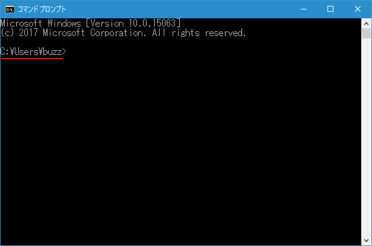
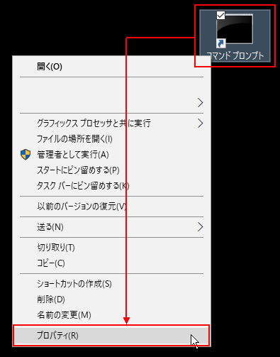
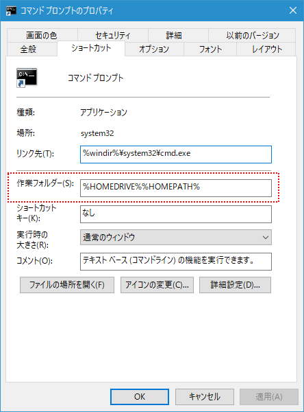
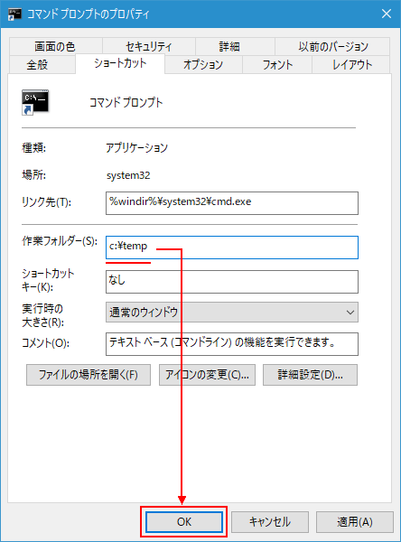
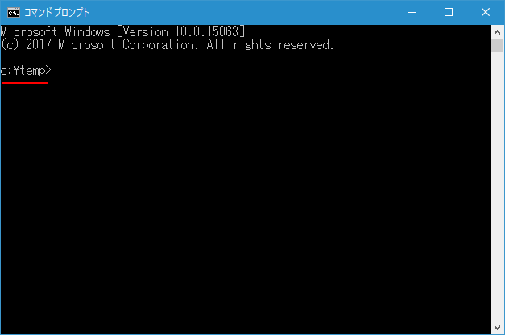

コマンドプロンプトを起動した時の初期フォルダを変更する
コマンドプロンプトを起動した時に最初に表示されるフォルダを変更する手順について解説します。コマンドプロンプトへのショートカットを利用して変更します。
コマンドプロンプトを起動した時の初期フォルダを変更する
Winddows10の環境でコマンドプロンプトを起動すると最初に表示されるフォルダは「C:\Users\ユーザー名」のように設定されます。(実際には環境変数のホームドライブとホームディレクトリに設定されている値を参照して設定されます)。

起動した後で実際に作業したいフォルダへ移動することになりますが、いつも同じフォルダで作業する場合などにはコマンドプロンプトを起動した時の最初から指定したフォルダが表示されると便利です。具体的にはコマンドプロンプトの起動と指定のフォルダへの移動をまとめてバッチファイルとして作成しておく方法とコマンドプロンプトのショートカットを作成して作業フォルダを変更する方法があります。ここではショートカットを使った方法について解説します。
※ 先にコマンドプロンプトへのショートカットを作成しておいて下さい。作成する手順については「コマンドプロンプトへのショートカットをデスクトップに作成する」を参照されて下さい。
それではコマンドプロンプトのショートカット上で右クリックをして下さい。次のようなメニューが表示されますので「プロパティ」をクリックして下さい。

プロパティの画面が表示されます。初期フォルダの設定は「作業フォルダ―」の個所で設定します。

「作業フォルダ―」の値が現在「%HOMEDRIVE%%HOMEPATH%」となっています。この値をコマンドプロントを起動した時に最初に表示されるフォルダの位置に変更して下さい。今回は例として「C:\temp」に変更します。直接値を書き換えて下さい。終わりましたら「OK」をクリックして下さい。

これで設定は完了です。それでは先ほど設定を変更したショートカットをダブルクリックしてコマンドプロンプトを起動して下さい。初期フォルダが先ほど設定したフォルダに変わっていることが確認できます。

初期フォルダの変更は設定したショートカットを使ってコマンドプロンプトを起動した場合にだけ有効です。別の手順でコマンドプロンプトを起動した場合は初期フォルダは変更されません。逆に複数のコマンドプロンプトへのショートカットを作成しておき、ショートカット毎に異なる初期フォルダを設定することができます。
( Written by Tatsuo Ikura )

著者 / TATSUO IKURA
初心者～中級者の方を対象としたプログラミング方法や開発環境の構築の解説を行うサイトの運営を行っています。